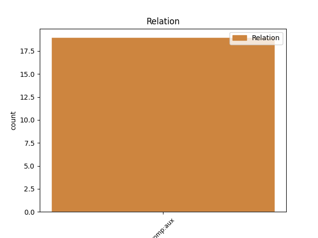
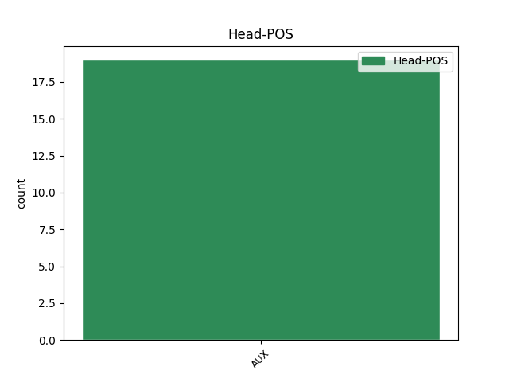
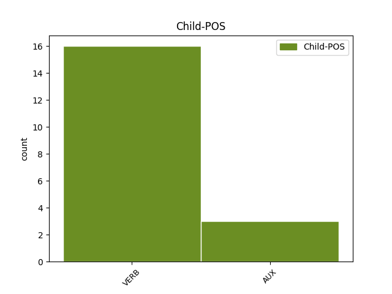

Distribution of features within this leaf



Agreement Rules sorted by frequency.
- When the dependent token is the complement for auxiliary(comp:aux) of the head token, and the head token is AUX and the dependent token is VERB.
1 Эртын _ _ _ _ 0 _ _ _
2 Ромада _ _ _ _ 0 _ _ _
3 бүри _ _ _ _ 0 _ _ _
4 талханай _ _ _ _ 0 _ _ _
5 алаабхи _ _ _ _ 0 _ _ _
6 хүрэтэр _ _ _ _ 0 _ _ _
7 бии бии VERB _ Mood=Ind|Number=Sing|Person=3|Tense=Past|VerbForm=Fin 8 comp:aux _ _
8 болоо бол AUX _ Mood=Ind|Number=Sing|Person=3|Tense=Past|VerbForm=Fin 0 _ _ _
9 һэн _ _ _ _ 0 _ _ _
10 . _ _ _ _ 0 _ _ _
1 Людендорф _ _ _ _ 0 _ _ _
2 хэдэн _ _ _ _ 0 _ _ _
3 һарын _ _ _ _ 0 _ _ _
4 турша _ _ _ _ 0 _ _ _
5 маша _ _ _ _ 0 _ _ _
6 ехэ _ _ _ _ 0 _ _ _
7 дарамтанда _ _ _ _ 0 _ _ _
8 байһан _ _ _ _ 0 _ _ _
9 болоод _ _ _ _ 0 _ _ _
10 бараг _ _ _ _ 0 _ _ _
11 лэ _ _ _ _ 0 _ _ _
12 буужа _ _ _ _ 0 _ _ _
13 үгэхэдэ _ _ _ _ 0 _ _ _
14 бэлэн _ _ _ _ 0 _ _ _
15 болоод боло AUX _ Mood=Cnd|Number=Sing|Person=3|VerbForm=Conv 16 comp:aux _ _
16 байба бай AUX _ Mood=Cnd|Number=Sing|Person=3|VerbForm=Conv 0 _ _ _
17 . _ _ _ _ 0 _ _ _
Disagree Examples:
1 2008 _ _ _ _ 0 _ _ _
2 оной _ _ _ _ 0 _ _ _
3 5 _ _ _ _ 0 _ _ _
4 һарада _ _ _ _ 0 _ _ _
5 ОХУ _ _ _ _ 0 _ _ _
6 - _ _ _ _ 0 _ _ _
7 ын _ _ _ _ 0 _ _ _
8 Үндэһэн _ _ _ _ 0 _ _ _
9 хуулиин _ _ _ _ 0 _ _ _
10 шүүхэ _ _ _ _ 0 _ _ _
11 тус _ _ _ _ 0 _ _ _
12 хотодо _ _ _ _ 0 _ _ _
13 байрлаха _ _ _ _ 0 _ _ _
14 болоһон боло AUX _ Mood=Ind|Number=Plur|Person=1|Tense=Past|VerbForm=Fin 15 comp:aux _ _
15 байна ба AUX _ Mood=Cnd|Number=Sing|Person=3|VerbForm=Conv 0 _ _ _
16 . _ _ _ _ 0 _ _ _
1 XIX _ _ _ _ 0 _ _ _
2 зуун _ _ _ _ 0 _ _ _
3 гэхэдэ _ _ _ _ 0 _ _ _
4 энэ _ _ _ _ 0 _ _ _
5 уласынь _ _ _ _ 0 _ _ _
6 байлдан _ _ _ _ 0 _ _ _
7 дагуулалта _ _ _ _ 0 _ _ _
8 , _ _ _ _ 0 _ _ _
9 ниилүүлэлтэ _ _ _ _ 0 _ _ _
10 , _ _ _ _ 0 _ _ _
11 шудалгаа _ _ _ _ 0 _ _ _
12 зэргээр _ _ _ _ 0 _ _ _
13 хүрээгээ _ _ _ _ 0 _ _ _
14 тэлэжэ _ _ _ _ 0 _ _ _
15 , _ _ _ _ 0 _ _ _
16 Польшоһоо _ _ _ _ 0 _ _ _
17 Номгон _ _ _ _ 0 _ _ _
18 далай _ _ _ _ 0 _ _ _
19 хүрэтэр _ _ _ _ 0 _ _ _
20 үргэлжэлһэн _ _ _ _ 0 _ _ _
21 Ородой _ _ _ _ 0 _ _ _
22 эзэнтэ _ _ _ _ 0 _ _ _
23 гүрэн _ _ _ _ 0 _ _ _
24 болоһон боло VERB _ Mood=Ind|Number=Plur|Person=1|Tense=Past|VerbForm=Fin 25 comp:aux _ _
25 байба бай AUX _ Mood=Cnd|Number=Sing|Person=3|VerbForm=Conv 0 _ _ _
26 . _ _ _ _ 0 _ _ _
1 Монголшууд _ _ _ _ 0 _ _ _
2 эртнээс _ _ _ _ 0 _ _ _
3 хавар _ _ _ _ 0 _ _ _
4 , _ _ _ _ 0 _ _ _
5 зун _ _ _ _ 0 _ _ _
6 , _ _ _ _ 0 _ _ _
7 намар _ _ _ _ 0 _ _ _
8 нь _ _ _ _ 0 _ _ _
9 сүү _ _ _ _ 0 _ _ _
10 сагаан _ _ _ _ 0 _ _ _
11 идээгээр _ _ _ _ 0 _ _ _
12 зусдаг зусд VERB _ Aspect=Imp|Mood=Imp|Number=Sing|Person=2|VerbForm=Fin 13 comp:aux _ _
13 байба байб AUX _ Mood=Cnd|Number=Sing|Person=3|VerbForm=Conv 0 _ _ _
14 . _ _ _ _ 0 _ _ _
15 20-р _ _ _ _ 0 _ _ _
16 зуунаас _ _ _ _ 0 _ _ _
17 Европ _ _ _ _ 0 _ _ _
18 хүнэһэнэй _ _ _ _ 0 _ _ _
19 ногоо _ _ _ _ 0 _ _ _
20 монголчуудын _ _ _ _ 0 _ _ _
21 хоол _ _ _ _ 0 _ _ _
22 хүнэһэнэй _ _ _ _ 0 _ _ _
23 чухал _ _ _ _ 0 _ _ _
24 хэсэг _ _ _ _ 0 _ _ _
25 болоһон _ _ _ _ 0 _ _ _
26 . _ _ _ _ 0 _ _ _
1 Шэнэ _ _ _ _ 0 _ _ _
2 үе _ _ _ _ 0 _ _ _
3 гэхэд _ _ _ _ 0 _ _ _
4 тэдэ _ _ _ _ 0 _ _ _
5 шажанай _ _ _ _ 0 _ _ _
6 болон _ _ _ _ 0 _ _ _
7 зан _ _ _ _ 0 _ _ _
8 суртахуунай _ _ _ _ 0 _ _ _
9 хубида _ _ _ _ 0 _ _ _
10 нэрэ _ _ _ _ 0 _ _ _
11 хүндэтэй _ _ _ _ 0 _ _ _
12 , _ _ _ _ 0 _ _ _
13 еврейн _ _ _ _ 0 _ _ _
14 ниигэмлигэй _ _ _ _ 0 _ _ _
15 һонирхолые _ _ _ _ 0 _ _ _
16 түлөөлэгшэ _ _ _ _ 0 _ _ _
17 хүнэй _ _ _ _ 0 _ _ _
18 хубида _ _ _ _ 0 _ _ _
19 , _ _ _ _ 0 _ _ _
20 илангаяа _ _ _ _ 0 _ _ _
21 еврей _ _ _ _ 0 _ _ _
22 буса _ _ _ _ 0 _ _ _
23 эрхэ _ _ _ _ 0 _ _ _
24 мэдэлтэнүүдтэй _ _ _ _ 0 _ _ _
25 харисаха _ _ _ _ 0 _ _ _
26 үед _ _ _ _ 0 _ _ _
27 шухала _ _ _ _ 0 _ _ _
28 байра _ _ _ _ 0 _ _ _
29 һуури _ _ _ _ 0 _ _ _
30 эзэлхэ _ _ _ _ 0 _ _ _
31 болоһон боло AUX _ Mood=Ind|Number=Plur|Person=1|Tense=Past|VerbForm=Fin 32 comp:aux _ _
32 байба байб AUX _ Mood=Cnd|Number=Sing|Person=3|VerbForm=Conv 0 _ _ _
33 . _ _ _ _ 0 _ _ _